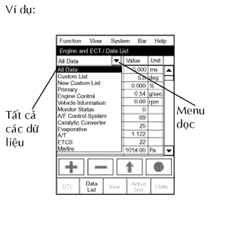

HỆ THỐNG SFI > DANH SÁCH DỮ LIỆU / THỬ KÍCH HOẠT |
| ĐỌC DANH MỤC DỮ LIỆU |
Hâm nóng động cơ.
Tắt khoá điện.
Nối máy chẩn đoán với giắc DLC3.
Bật khoá điện ON.
Bật máy chẩn đoán ON.
|  |
Vào các menu sau: Powertrain / Engine and ECT / Data List.
Đọc danh mục dư liệu trên máy chẩn đoán.
| Màn hình máy chẩn đoán | Mục/Phạm vi đo (Màn hình máy chẩn đoán) | Điều kiện bình thường* | Chú ý chẩn đoán |
| Vòi phun | Khoảng thời gian phun của xylanh No.1/ Min.: 0 ms, Max.: 32.64 ms | Không tải: 1 đến 3 ms | - |
| IGN Advance | Thời điểm đánh lửa sớm cho xylanh No.1/ Min.: -64°, Max.: 63.5° | Không tải: BTDC 0 đến 20° | - |
| Calculate Load | Tải tính toán bởi ECM/ Min.: 0%, Max.: 100% |
| - |
| MAF | Tỷ lệ dòng khí nạp từ cảm biến MAF/ Min.: 0 g/sec., Max.: 665.35 g/sec. |
| Nếu giá trị xấp xỉ là 0.0 g/giây :
|
| Tốc độ động cơ | Tốc độ động cơ/ Min.: 0 rpm, Max.: 16,383.75 rpm | Không tải: 650 đến 750 vòng/phút | - |
| Vehicle Speed | Tốc độ xe/ Min.: 0 km/h, Max.: 255 km/h | Tốc độ xe thực tế | Tốc độ báo trên đồng hồ tốc độ |
| Coolant Temp | Cảm biến nhiệt độ nước làm mát động cơ/ Min.: -40°C (-40°F) Max.: 215°C (419°F) | Sau khi hâm nóng động cơ: 80 đến 95°C (176 đến 203°F) |
|
| Intake Air | Nhiệt độ khí nạp/ Min.: -40°C (-40°F) Max.: 215°C (419°F) | Tương đương với nhiệt độ môi trường: 50°C (122°F) trở xuống |
|
| Air-Fuel Ratio | Tỷ lệ không khí nhiên liệu/ Min.: 0, Max.: 1.999 | Không tải: 0.8 đến 1.2 | - |
| Purge Density Lean Value | Giá trị ghị nhớ của mật độ lọc/ Min.: -50%, Max.: 350% | Không tải: -40 đến 1% | Thông số sửa chữa |
| Purge Flow | Dòng lọc/ Min.: 0%, Max.: 102.4% | Không tải: 0 đến 6% | - |
| Knock Correct Learn Value | Giá trị ghi nhớ hiệu chỉnh tiếng gõ/ Min.: -64° CA, Max.: 1,984° CA | 0 đến 18.5°CA Lái xe: 70 km/h (44 mph) | Thông số sửa chữa |
| Knock Feedback Value | Giá trị phản hồi về tiếng gõ/ Min.: -64°CA, Max.: 1,984°CA | -20 đến 0°CA Lái xe: 70 km/h (44 mph) | Thông số sửa chữa |
| Accelerator Position No. 1 | Vị trí bàn đạp ga tuyệt đối No.1/ Min.: 0%, Max.: 100% | 10 đến 22%: Nhả bàn đạp ga 54 đến 86%: Đạp hết bàn đạp ga | - |
| Accelerator Position No. 2 | Vị trí bàn đạp ga tuyệt đối No.2/ Min.: 0%, Max.: 100% | 12 đến 42%: Nhả bàn đạp ga 66 đến 98%: Đạp hết bàn đạp ga | - |
| Accelerator Position No. 1 | Điện áp ra của cảm biến vị trí bàn đạp ga số 1/ Min.: 0 V, Max.: 4.98 V | - | Dữ liệu lưu tức thời của ETCS |
| Accelerator Position No. 2 | Điện áp ra của cảm biến vị trí bàn đạp ga số 1/ Min.: 0 V, Max.: 4.98 V | - | Dữ liệu lưu tức thời của ETCS |
| Accelerator Position No. 1 | Điện áp ra của cảm biến vị trí bàn đạp ga số 1/ Min.: 0 V, Max.: 5 V |
| - |
| Accelerator Position No. 2 | Điện áp ra của cảm biến vị trí bàn đạp ga số 2/ Min.: 0 V, Max.: 5 V |
| - |
| Accelerator Idle Position | Cảm biến vị trí bàn đạp ga có phát hiện được không tải hay không/ ON hay OFF | Không tải: ON (chế độ kiểm tra) | - |
| Throttle Fully Close Learn | Bướm ga đóng hoàn toàn/ (Giá trị ghi nhớ) Min.: 0 V, Max.: 5 V | 0.4 đến 0.8 V | - |
| Accel Fully Close #1 (AD) | Giá trị ghi nhớ đóng hoàn toàn bàn đạp ga No.1 (AD)/ Min.: 0 V, Max.: 4.9804 V | - | Dữ liệu sửa chữa ETCS |
| Accel Fully Close Learn #1 | Giá trị ghi nhớ đóng hoàn toàn bàn đạp ga No.1/ Min.: 0°, Max.: 124.512° | - | Dữ liệu sửa chữa ETCS |
| Accel Fully Close Learn #2 | Giá trị ghi nhớ đóng hoàn toàn bàn đạp ga No.2/ Min.: 0°, Max.: 124.512° | - | Dữ liệu sửa chữa ETCS |
| Fail Safe Drive | Chức năng dự phòng có thực hiện hay không/ ON hay OFF | ETCS bị hỏng: ON | - |
| Fail Safe Drive (Main CPU) | Chức năng dự phòng có thực hiện hay không/ ON hay OFF | ETCS bị hỏng: ON | - |
| ST1 | Bàn đạp phanh/ ON hay OFF | Nhả: ON Đạp: OFF | - |
| System Guard | Bảo vệ hệ thống/ ON hay OFF | - | Dữ liệu sửa chữa ETCS |
| Open Side Malfunction | Hư hỏng phía mở/ ON hay OFF | - | Dữ liệu sửa chữa ETCS |
| Throttle Position | Cảm biến vị trí bàn đạp ga tuyệt đối/ Min.: 0%, Max.: 100% |
| Đọc giá trị với hoạt động xâm nhập (thử kích hoạt) |
| Throttle Idle Position | Cảm biến vị trí bướm ga có phát hiện đuợc không tải hay không/ ON hay OFF | Không tải: ON (chế độ kiểm tra) | - |
| Throttle Require Position | Vị trí bướm ga yêu cầu/ Min.: 0 V, Max.: 5 V | Không tải: 0.4 đến 4.5 V (chế độ kiểm tra) | - |
| Throttle Sensor Position | Vị trí cảm biến bướm ga/ Min.: 0%, Max.: 100% | Không tải 0 đến 10% (chế độ kiểm tra) | Giá trị tính toán dựa trên VTA1 |
| Throttle Sensor Position #2 | Vị trí cảm biến bướm ga #2/ Min.: 0%, Max.: 100% | - | Giá trị tính toán dựa trên VTA2 |
| Throttle Position No. 1 | Cảm biến vị trí bướm ga No.1 Điện áp ra/ Min.: 0 V, Max.: 4.98 V | - | Dữ liệu sửa chữa ETCS |
| Throttle Position No. 2 | Điện áp phát ra của cảm biến vị trí bướm ga số 2/Min.: 0 %, Max.: 4.98 V | - | Dữ liệu sửa chữa ETCS |
| Throttle Position No. 1 | Cảm biến vị trí bướm ga No.1/ Min.: 0 V, Max.: 5 V |
| - |
| Throttle Position No. 2 | Cảm biến vị trí bướm ga No.2/ Min.: 0 V, Max.: 5 V |
| Đọc giá trị với hoạt động xâm nhập (thử kích hoạt) |
| Throttle Position Command | Giá trị lệnh vị trí bướm ga/ Min.: 0 V, Max.: 4.9804 V | 0.5 đến 4.8 V | Dữ liệu sửa chữa ETCS |
| Throttle Sens Open Pos #1 | Vị trí bộ mở cảm biến bướm ga No.1/ Min.: 0 %, Max.: 4.9804 V | 0.6 đến 0.9 V | Dữ liệu sửa chữa ETCS |
| Throttle Sens Open Pos #2 | Vị trí bộ mở cảm biến bướm ga No.2/ Min.: 0 %, Max.: 4.9804 V | 2.2 đến 2.6 V | Dữ liệu sửa chữa ETCS |
| Cảm biến vị trí bướm ga mở #1 (AD) | Vị trí bộ mở cảm biến bướm ga No.1 (AD)/ Min.: 0 V, Max.: 4.9804 V | 0.6 đến 0.9 V | Dữ liệu sửa chữa ETCS |
| Throttle Motor | Điều khiển mở tơ bướm ga có được phép hay không/ ON hay OFF | Không tải: ON (chế độ kiểm tra) | Hãy đọc giá trị với khoá điện ở ON (động cơ không nổ máy) |
| Throttle Motor Current | Dòng điện môtơ bướm ga/ Min.: 0 A, Max.: 80 A | Không tải: 0 đến 40 A (chế độ kiểm tra) | - |
| Throttle Motor | Throttle motor Min.: 0%, Max.: 100% | Không tải: 0.5 đến 40% (chế độ kiểm tra) | - |
| Throttle Motor Current | Dòng điện môtơ bướm ga/ Min.: 0 A, Max.: 19.92 A | Không tải: 0 đến 3.0 A | - |
| Throttle Motor Open Duty | Hệ số hiệu dụng mở môtơ bướm ga/ Min.: 0%, Max.: 100% | Khi chạy không tải: 0 đến 40% | Khi đạp bàn đạp ga, thì tỷ lệ hiểu dụng giảm xuống |
| Throttle Motor Close Duty | Hệ số hiệu dụng đóng môtơ bướm ga/ Min.: 0%, Max.: 100% | Khi chạy không tải: 0 đến 40% | Khi nhả nhanh bàn đạp ga, thì tỷ lệ hiểu dụng tăng lên |
| Throttle Motor Duty (Open) | Hệ số hiệu dụng môtơ bướm ga (mở)/ Min.: 0%, Max.: 100% | - | Dữ liệu sửa chữa ETCS |
| Throttle Motor Duty (Close) | Hệ số hiệu dụng môtơ bướm ga (đóng)/ Min.: 0%, Max.: 100% | - | Dữ liệu sửa chữa ETCS |
| O2S B1 S1 | Điện áp phát ra của cảm biến ôxy có sấy cho thân máy 1 cảm biến 1/ Min.: 0 V, Max.: 1.275 V | Lái xe 70km/h (44 mph): 0 đến 1.0 V | Việc tiến hành điều khiển chức năng thử kích hoạt lưu lượng nhiên liện có thể giúp kỹ thuật viên kiểm tra điện áp ra của cảm biến |
| Short FT #1 | Hiệu chỉnh nhiên liệu ngắn hạn, thân máy 1/ Min.: -100%, Max.: 99.2% | -20 đến 20% | Sự bù nhiên liệu ngắn hạn thường để duy trì tỷ lệ khí-nhiên liệu tại tỷ lệ định trước |
| Long FT #1 | Hiệu chỉnh nhiên liệu dài hạn của Thân máy 1/ Min.: -100%, Max.: 99.2% | -20 đến 20% | Sự bù nhiên liệu toàn bộ thực hiện trong kỳ dài hạn để bù sự lệch liên tục của hiệu chỉnh nhiên liệu ngắn hạn từ giá trị trung tâm. |
| Fuel System Status (Bank 1) | Trạng thái của hệ thống nhiên liệu (Thân máy 1) / OL, CL, OL DRIVE, OL FAULT hay CL FAULT | Chạy không tải sau khi hâm nóng: CL (chế độ kiểm tra) |
|
| O2FT B1 S1 | Hiệu chỉnh nhiên liệu ngắn hạn, thân máy 1 cảm biến 1/ Min.: -100%, Max.: 99.2% | -20 đến 20% | Giống như Short FT #1 |
| Initial Engine Coolant Temp | Nhiệt độ nước làm mát động cơ ban đầu/ Min.: -40°C, Max.: 120°C | Gần với nhiệt độ không khí môi trường | Thông số sửa chữa |
| Initial Intake Air Temp | Nhiệt độ khí nạp ban đầu/ Min.: -40°C, Max.: 120°C | Gần với nhiệt độ không khí môi trường | Thông số sửa chữa |
| Injection Volume (Cylinder 1) | Lượng phun (Xylanh 1)/ Min.: 0 ml, Max.: 2.048 ml | 0 đến 0.5 ml | Số lượng nhiên liệu liệu phun trong 10 lần |
| Starter Signal | Tín hiệu máy khởi động/ ON hay OFF | ON: Quay khởi động | - |
| Power Steering Switch | Tín hiệu trợ lực lái/ ON hay OFF | ON: trợ lực lái hoạt động | - |
| Power Steering Switch | Tín hiệu trợ lực lái/ ON hay OFF | ON: Khi vôlăng quay lần đầu sau khi khóa điện bật ON | Trạng thái của tín hiệu này thông thường là ON cho đến khi khóa điện tắt OFF. |
| Closed Throttle Position SW | Công tắc vị trí bướm ga được đóng (không tắc không tải)/ ON hay OFF | ON: Đóng bướm ga | - |
| Tín hiệu A/C | Tín hiệu A/C ON hay OFF | ON: Bật công tắc A/C ON | - |
| Electrical Load Signal | Tín hiệu tải điện/ ON hay OFF | ON: Đèn pha hay bộ sấy kính bật ON | - |
| Công tắc đèn phanh | Công tắc đèn phanh/ ON hay OFF | ON: Đạp bàn đạp phanh | - |
| ETCS Actuator Power | Nguồn hệ thống điều khiển bướm ga điện tử có nhập vào hay không/ ON hay OFF | Không tải: ON (chế độ kiểm tra) | - |
| +BM Voltage | Điện áp +BM/ Min.: 0 V, Max.: 19.922 V | Không tải: 10 đến 15 V | Dữ liệu sửa chữa ETCS |
| Điện áp ắc quy | Điện áp ắc quy/ Min.: 0 V, Max.: 65.535 V | Không tải: 9 đến 14 V (chế độ kiểm tra) | - |
| Actuator Power Supply | Nguồn cấp cho bộ chấp hành: ON hay OFF | Không tải ON (chế độ kiểm tra) | Dữ liệu sửa chữa ETCS |
| Atmosphere Pressure | Áp suất khí quyển/ Min.: 0 kPa, Max.: 150 kPa | - | - |
| ACT VSV | Trạng thái cắt A/C cho thử kích hoạt: ON hay OFF | - | Dữ liệu hỗ trợ thử kích hoạt |
| EVAP Purge VSV | Trạng thái VSV cho điều khiển EVAP ON hay OFF | - | Dữ liệu hỗ trợ thử kích hoạt |
| Fuel Pump/Speed Status | Bơm Nhiên liệu/Trạng thái Tốc độ/ ON hay OFF | Không tải: ON (chế độ kiểm tra) | - |
| Trạng thái điều khiển VVT | Trạng thái điều khiển VVT/ ON hay OFF | - | Hỗ trợ cho việc thử kích hoạt VVT |
| TC và TE1 | Các cực TC và TE của DLC3/ ON hay OFF | - | - |
| Góc chỉnh VVT (Thân máy 1) | Góc thay đổi VVT (Thân máy 1)/ Min.: 0%, Max.: 100% | Không tải: 0% | Giá trị tín hiệu hiệu dụng VVT trong khi vận hành mạnh |
| Góc thay đổi VVT (Thân máy 1) | Góc thay đổi VVT/ Min.: 0°FR, Max.: 60°FR | Không tải: 0 đến 5°FR | Góc hiển thị khi hoạt động mạnh |
| Tỷ lệ OCV VVT (Thân máy 1) | Tỷ lệ vận hành VVT OCV/ Min.: 0%, Max.: 100% | Không tải: 0% | Giá trị hệ số hiệu dụng yêu cầu cho hoạt động xâm nhập |
| Idle Fuel Cut | Cắt nhiên liệu không tải/ ON hay OFF | Thao tác cắt nhiên liệu: ON | FC Idl = ON khi bướm ga đóng hoàn toàn và tốc độ động cơ trên 2,800 v/p |
| FC TAU | TAU cắt nhiên liệu: Cắt nhiên liệu trong khi tải rất nhẹ/ ON or OFF | Thao tác cắt nhiên liệu: ON | Sự cắt nhiên liệu được tiến hành dưới tải rất nhẹ để tránh cho sự đốt của động cơ khỏi bị chát không hoàn toàn |
| #Codes | Các số mã lỗi/ Min.: 0, Max.: 255 | - | Số lượng DTC phát hiện được |
| Check Mode | Chế độ kiểm tra/ ON hay OFF | Chế độ kiểm ON: ON | (Xem trang Kích chuột vào đây) |
| Thử SPD | Kết quả chế độ kiểm tra cho cảm biến tốc độ xe: 0: COMPL, 1: INCOMPL | - | - |
| MIL | Trạng thái đèn MIL/ ON hay OFF | MIL ON: ON | - |
| Engine Run Time | Thời gian chạy động cơ/ Min.: 0 giây, Max.: 65,535 giây | Thời gian sau khi động cơ khởi động | Thông số sửa chữa |
| Thời gian sau khi xóa DTC | Thời gian sau khi xóa DTC/ Min.: 0 minutes, Max.: 65,535 phút | Tương đương với thời gian sau khi xóa mã DTC | - |
| Quãng đường từ khi xóa DTC | Quãng đường từ khi xóa DTC/ Min.: 0 km, Max.: 65,535 km | Tương đương với quãng đường lái xe sau khi xóa mã DTC | - |
| Chu kỳ hâm nóng xoá DTC | Số chu kỳ hâm nóng sau khi xóa DTC/ Min.: 0, Max.: 255 | - | Số chu kỳ hâm nóng sau khi xóa DTC |
| Mã kiểu xe | Mã kiểu xe | - | Xác định mã kiểu xe: TGN### |
| Loại động cơ | Loại động cơ | - | Xác định loại động cơ: 1TR-FE |
| Cylinder Number | Số xylanh/ Min.: 0, Max.: 255 | - | Xác định số xylanh: 4 |
| Loại hộp số | Loại hộp số | - | Xác định loại hộp số: MT |
| Đích đến (Thị trường) | Đích đến (Thị trường) | - | Xác định khu vực: W |
| Model Year | Năm kiểu xe/ Min.: 1900, Max.: 2155 | - | Xác định đời xe: 200# |
| Nhận dạng hệ thống | Nhận dạng hệ thống | - | Kiểm tra tốc độ động cơ: GASLIN (động cơ xăng) |
| Số lượng DTC phát ra | Số lượng các DTC phát ra | - | - |
| TIẾN HÀNH THỬ KÍCH HOẠT |
Hâm nóng động cơ.
Tắt khoá điện.
Nối máy chẩn đoán với giắc DLC3.
Bật khoá điện ON.
Bật máy chẩn đoán ON.
Vào các menu sau: Powertrain / Engine and ECT / Active Test.
Tuân theo những hiện thị màn hình máy chẩn đoán, thực hiện thử kích hoạt.
| Màn hình máy chẩn đoán | Chi tiết phép thử | Phạm vị điều khiển | Chú ý chẩn đoán |
| Điều khiển lượng phun | Điều khiển lượng phun (Tốc độ động cơ: 3,000 v/p trở xuống) | Min.: -12.5%, Max.: 24.8% |
|
| Control the A/C Cut Signal | Điều khiển tín hiệu cắt A/C | ON hay OFF | - |
| Kích hoạt điều khiển VSV cho EVAP | Kích hoạt điều khiển VSV cho EVAP | ON hay OFF | - |
| Control the Fuel Pump / Speed | Điều khiển bơm nhiên liệu | ON hay OFF | Động cơ tắt máy |
| Activate the VVT System (Bank 1) | Kích hoạt hệ thống VVT (Thân máy 1) | ON hay OFF |
|
| Nối TC và E1. | Nối TC và TE1 | ON hay OFF | - |
| Control the Idle Fuel Cut Prohibit | Điều khiển ngăn cắt nhiên liệu không tải | ON hay OFF | Trong khi chạy không tải |
| Control the ETCS Open/Close Slow Speed | Điều khiển mở/đóng ETCS tốc độ chậm | Mở hay đóng | Phép thử có thể khi các điều kiện sau thỏa mãn:
|
| Control the ETCS Open/Close Fast Speed | Điều khiển mở/đóng ETCS tốc độ nhanh | Mở hay đóng | Phép thử có thể khi các điều kiện sau thỏa mãn:
|
| Điều khiển cắt nhiên liệu xylanh #1 | Điều khiển cắt nhiên liệu xylanh #1 | ON hay OFF | Cắt nhiên liệu xi lanh No. 1 để cân bằng công suất
|
| Điều khiển cắt nhiên liệu xylanh #2 | Điều khiển cắt nhiên liệu xylanh #2 | ON hay OFF | Cắt nhiên liệu xi lanh No. 2 để cân bằng công suất
|
| Điều khiển cắt nhiên liệu xylanh #3 | Điều khiển cắt nhiên liệu xylanh #3 | ON hay OFF | Cắt nhiên liệu xi lanh No. 3 để cân bằng công suất
|
| Điều khiển cắt nhiên liệu xylanh #4 | Điều khiển cắt nhiên liệu xylanh #4 | ON hay OFF | Cắt nhiên liệu xi lanh No. 4 để cân bằng công suất
|
| Điều khiển tuyến tính VVT (Thân máy 1) | Điều khiển VVT (Thân máy 1) | Min.: -128%, Max.: 127% | - |